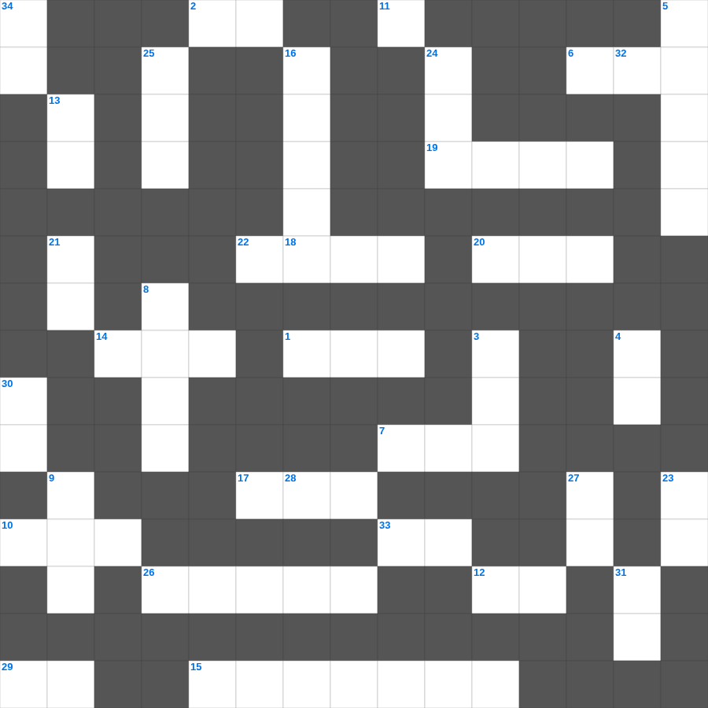

성경 속 창조물 상식
📌 서비스 정의
십자가로세로는 교회 주보와 주일학교에서 사용할 수 있는 성경 기반 가로세로 퍼즐 서비스입니다. 성경 인물, 사건, 핵심 구절을 바탕으로 제작되었습니다. 온라인 풀이 및 인쇄 기능을 제공합니다.
성경를 주제로 한 성경 가로세로 퀴즈입니다. 35개의 단어를 맞춰보세요! 가로세로 낱말 퍼즐 형식으로 성경의 핵심 내용을 재미있게 복습할 수 있습니다.

📝 가로 힌트
1. 기생 라합이 창문에 매단 표식
2. 하나님께 예물을 드리는 시간
6. 하나님께 노래로 영광 돌리는 팀
7. 부지중에 지은 죄를 속하기 위한 제사
10. 노아의 방주에 비가 내린 일수
11. 너는 나 외에는 다른 이것들을 두지 말라
12. 아브라함이 이삭 대신 드린 제물
14. 종려나무 성읍이라 불리는 가장 오래된 성
15. 어린아이들이 내게 오는 것을 금하지 말라
17. 향을 피워 올리는 곳
18. 출애굽을 기념하는 이스라엘 최대 절기
19. 쉬지 말고 이것하라
20. 노아의 방주에 탄 사람의 총수
22. 예수님이 태어나 뉘이셨던 곳
26. 바울과 실라가 감옥에서 한 행동
29. 눈물을 그 눈에서 이것해 주시리니
33. 양 떼를 치는 감독자
📝 세로 힌트
3. 죄를 속하기 위해 드리는 제사
4. 오직 의인은 이것으로 말미암아 살리라
5. 아브라함이 떠난 고향
8. 하나님이 아브라함에게 아들을 바치라 한 산
8. 아브라함이 이삭을 번제로 드리려 한 산
9. 이스라엘이 광야에서 보낸 년수
13. 엘리야가 회오리바람을 타고 간 곳
16. 나아만 장군이 요단강에 일곱 번 씻음
21. 여호와 이것: 준비하시는 하나님
23. 고라 자손의 반역 때 땅이 갈라짐
24. 그물에 가득 찬 각종 이것
25. 너희는 여호와를 만날 만한 때에 이것하라
27. 다윗이 연주하던 악기
28. 분향단에서 피우는 거룩한 것
30. 밤이 없겠고 등불과 이것이 쓸데없으니
31. 베드로가 감옥에서 천사의 도움으로 나옴
32. 잃어버린 한 마리 이것을 찾는 목자
34. 바다의 물고기와 이것들
🧑🏫 교회 교육 자료 활용
이 퍼즐은 주일학교 교재 추천 자료로 활용할 수 있고, 주일학교 주보에 넣기 좋은 분량으로 구성되어 있습니다. 수업용 주일학교 교안에 활동지로 붙이거나, 예배 후 복습용 주일학교 공과교재로 바로 사용할 수 있습니다.
🏷️ 키워드
성경 가로세로 퀴즈, 성경, 십자가로세로, 성경퀴즈, 말씀퀴즈, 가로세로퍼즐, 주일학교 교재 추천, 주일학교 주보, 주일학교 교안, 주일학교 공과교재